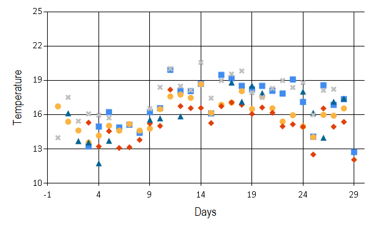
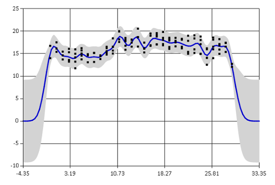
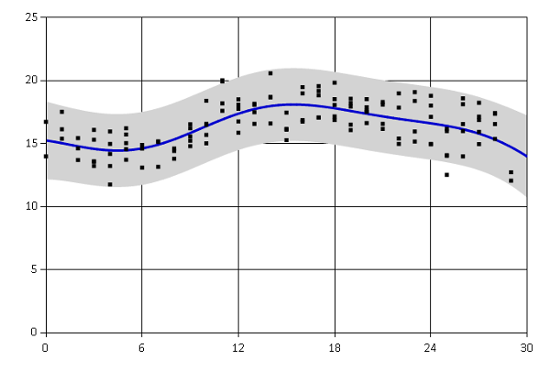

For my academic research, I recently wrote a library in F# for fitting basic Gaussian process regression that I used to model time-series gene expression data. I am releasing the code publicly as an Ariadne package. In its current state, you can use the library to model various time-series data.

Gaussian processes are probabilistic models for random functions. Ariadne package implements basic Gaussian processes for supervised nonlinear regression.
In general, Gaussian processes are used to model functions \(f : X \rightarrow Y\) when we have noisy observations of function values \(y_i\) at locations \(x_i\)
\[(x_1, y_1), \dots, (x_n, y_n), \qquad y_i = f(x_i) + \epsilon_i, \text{ where } \epsilon_i \sim \mathcal{N}(0, \sigma^2_{\text{noise}})\]
I will not go into theoretical explanations about Gaussian processes, there are other sources for that. Instead, I will introduce an example of Gaussian processes in action. In the rest of this blog post, I use Ariadne to model weather data.
Example: modelling temperature measurements
Let's say I want to know how the weather was over the last couple of weeks in Cambridge (UK). Of course, I can download historical data from the Open Weather Map and analyze them. But what if I do not trust the summary data they provide for specific cities? I want to go to the source and download actual data measured at individual weather stations. If I download historical data from several different locations around Cambridge, I should be able to integrate the data together.
Here, I will show a few code snippets, you can find the complete script with commentary here.
I downloaded temperatures (in Celsius) from 5 weather stations that all lie approximately within 15 mile radius from the centre of Cambridge. The data show average temperature for every day over the past month. This is how they look:

1: 2: 3: 4: 5: 6: 7: 8: 9: 10: 11: |
> data;; val it : Observation<float> [] = [|{Locations = [|3.0; 4.0; 5.0; 6.0; 7.0; 8.0; 9.0; 10.0; 11.0; 12.0; 13.0; 14.0; 15.0; 16.0; 17.0; 18.0; 19.0; 20.0; 21.0; 22.0; 23.0; 24.0; 25.0; 26.0; 27.0; 28.0; 29.0|]; Observations = [|13.23; 14.98; 16.23; 14.9; 15.14; 14.42; 16.23; 16.58; 19.94; 18.09; 18.08; 18.7; 16.12; 19.49; 19.18; 18.53; 18.22; 18.53; 18.1; 17.86; 19.09; 17.13; 14.09; 18.59; 16.87; 17.37; 12.74|];}; (...) |] |
The locations are in days from the beginning of my observations, different markers correspond to individual weather stations. Notice that the data are quite noisy. Also, we have different number of observations in different days. Sometimes there are 5 observations, sometimes only 2, sometimes there are outliers. Gaussian processes are a great tool to model this form of data because they take all the noise and uncertainty into account.
Now we can construct a model for the observed data - a Gaussian process with squared exponential covariance function. The covariance function (also called kernel) specifies a form of function that we are modelling. Squared exponential kernel generally characterizes very smooth functions.
1: 2: 3: 4: 5: 6: 7: 8: 9: 10: 11: |
#r "Ariadne.dll" open Ariadne.GaussianProcess open Ariadne.Kernels // Covariance hyperparameters let lengthscale = 1.0 let signalVariance = 20.0 let noiseVariance = 1.0 // Covariance function let sqExp = SquaredExp.SquaredExp(lengthscale, signalVariance, noiseVariance) |
I initially guessed some values for hyperparameters of the squared exponential covariance function. The first hyperparameter is the lengthscale. Its value regulates how quickly the function values change, how wide squiggles we expect to see in the function. Lengthscale of 1 assumes that the temperature changes quite quickly from day to day.
The second parameter is the signal variance which regulates how far does the function go from its prior mean. Since the prior mean function of our Gaussian process is zero and I am being lazy by leaving the data on their original temperature scale, I have to set quite a large variance. The last parameter is the noise variance which models the amount of noise present in the observed data. You can find more details on interpretation of each hyperparameter in the documentation.
With hyperparameters prepared, we can finally fit the Gaussian process regression model.
1: 2: |
let gp = sqExp.GaussianProcess() gp |> plot data |

The graph shows the mean estimated temperature as a blue line. The grey region corresponds to a 95% confidence interval. The fit is not very bad, the confidence interval includes most of the observed data and the mean captures the general trend. You can see that the function goes to zero rapidly outside of the observed region. This is because the Gaussian process prediction reverts to the prior mean value when there are no observations. Note that the confidence interval is also getting much wider in that area. Generally we can reliably extrapolate only about one lengthscale outside of the data regions.
Optimizing hyperparameters
Guessing values hyperparameters is not a very reliable method of fitting a model. Ariadne provides two basic methods for optimizing hyperparameters:
- Metropolis-Hastings posterior sampling
- simple gradient descent
Both methods are optimizing the log likelihood of hyperparameters given observed data. The first method, Metropolis-Hastings, is a probabilistic method which gives us the mean estimate of the posterior distribution of hyperparameters, given observations and our prior beliefs about hyperparameter values. This is a proper Bayesian method for optimizing hyperparameters.
First we need to set prior distributions for each hyperparameter. Here I am using a Log-normal prior because all hyperparamters have to be larger than zero. The prior distributions are centred around my initial guessed values.
1: 2: 3: 4: 5: |
let rnd = System.Random(0) let lengthscalePrior = Distributions.LogNormal.WithMeanVariance(1.0, 1.0, rnd) let variancePrior = Distributions.LogNormal.WithMeanVariance(20.0, 5.0, rnd) let noisePrior = Distributions.LogNormal.WithMeanVariance(0.5, 1.0, rnd) let prior = SquaredExp.Prior(lengthscalePrior, variancePrior, noisePrior) |
Now we set parameters of the Metropolis-Hastings sampler.
1: 2: 3: 4: 5: |
open Ariadne.Optimization.MetropolisHastings let settings = { Burnin = 500 // Number of burn-in iterations Lag = 5 // Thinning of posterior samples SampleSize = 100 } // Number of thinned posterior samples |
And finally we can run the sampler and create a Gaussian process with the optimized covariance function (kernel).
1: 2: 3: 4: 5: 6: |
let kernelMH = SquaredExp.optimizeMetropolis data settings prior sqExp let gpMH = kernelMH.GaussianProcess() // Compare log likelihoods printfn "Original Gaussian process likelihood: %f" (gp.LogLikelihood data) printfn "MH Gaussian process likelihood: %f" (gpMH.LogLikelihood data) |

1: 2: |
Original Gaussian process likelihood: -333.369341 MH Gaussian process likelihood: -246.435036 |
Log likelihood of the new Gaussian process increased quite significantly, which means that the optimized Gaussian process provides a much better fit to the observed training data than the original one.
Another method to select values of hyperparameters is to use some algorithm for standard nonlinear optimization. Ariadne currently implements only basic gradient descent algorithm. This method uses derivatives of the log likelihood function to find a local optimum.
1: 2: 3: 4: 5: 6: 7: 8: 9: 10: 11: 12: |
let gdSettings = { GradientDescent.Iterations = 1000; GradientDescent.StepSize = 0.1} let gradientFunction parameters = SquaredExp.fullGradient data parameters let kernelGD = gradientDescent gradientFunction gdSettings (sqExp.Parameters) |> SquaredExp.ofParameters let gpGD = kernelGD.GaussianProcess() printfn "Original Gaussian process likelihood: %f" (gp.LogLikelihood data) printfn "GD Gaussian process likelihood: %f" (gpGD.LogLikelihood data) |

1: 2: |
Original Gaussian process likelihood: -333.369341 GD Gaussian process likelihood: -241.782424 |
Gradient descent found different optimum than Metropolis-Hastings. The fit seems to capture mainly the overall trend in the temperatures over the whole month.
The two methods generally yield different resulting models. Metropolis-Hastings takes into account our prior beliefs about hyperparameter values and it also samples from the true posterior. On the other hand, gradient descent finds only a single local maximum of the nonlinear log likelihood function.
Summary
It seems that conclusion of this little temperature analysis is that beginning of September was generally quite warm in Cambridge but the temperatures are probably slowly beginning to drop. This does not sound very surprising! However, we did it by summarizing noisy data with missing values, coming from five different weather stations. By using Gaussian processes, we also directly get error bars for our regression estimates.
This blog post includes only snippets of the whole data analysis. You can find the complete F# script in this FsLab Journal. More information on how to use Ariadne, such as how to compute predictions for unobserved data, are available on the project website. The library is in a very early stage and I will be happy for any feedback or suggestions.
Links
- Ariadne project website with documentation.
- Library source code on GitHub.
FsLab Journal shows the full script for temperature data analysis, which includes data download from Open Weather Map and full commentary.
You can download the source code for weather analysis from GitHub.
val float : value:'T -> float (requires member op_Explicit)
Full name: Microsoft.FSharp.Core.Operators.float
--------------------
type float = System.Double
Full name: Microsoft.FSharp.Core.float
--------------------
type float<'Measure> = float
Full name: Microsoft.FSharp.Core.float<_>
[|0.0; 1.0; 2.0; 3.0; 4.0; 5.0; 6.0; 7.0; 8.0; 9.0; 10.0; 11.0; 12.0;
13.0; 14.0; 15.0; 16.0; 17.0; 18.0; 19.0; 20.0; 21.0; 22.0; 23.0; 24.0;
25.0; 26.0; 27.0; 28.0|];
Observations =
[|16.74; 15.4; 14.63; 13.58; 14.18; 15.05; 14.62; 15.19; 14.62; 14.8;
16.5; 17.61; 17.77; 17.49; 18.68; 16.17; 16.88; 17.07; 18.07; 16.51;
17.61; 16.57; 15.41; 15.97; 14.98; 14.05; 16.0; 15.93; 16.56|];};
{Locations =
[|3.0; 4.0; 5.0; 6.0; 7.0; 8.0; 9.0; 10.0; 11.0; 12.0; 13.0; 14.0; 15.0;
16.0; 17.0; 18.0; 19.0; 20.0; 21.0; 22.0; 23.0; 24.0; 25.0; 26.0; 27.0;
28.0; 29.0|];
Observations =
[|15.32; 13.23; 14.57; 13.1; 13.16; 13.81; 15.24; 15.03; 18.2; 16.76;
16.58; 16.6; 15.28; 16.75; 17.08; 16.88; 16.08; 16.64; 16.18; 14.99;
15.17; 14.95; 12.53; 16.56; 14.96; 15.38; 12.07|];};
{Locations =
[|1.0; 2.0; 3.0; 4.0; 5.0; 9.0; 10.0; 12.0; 17.0; 18.0; 19.0; 20.0; 24.0;
25.0; 26.0; 27.0; 28.0|];
Observations =
[|16.14; 13.71; 13.59; 11.76; 13.73; 15.57; 15.7; 15.87; 18.83; 17.16;
18.56; 17.9; 18.03; 16.18; 14.0; 17.15; 17.43|];};
{Locations =
[|0.0; 1.0; 2.0; 3.0; 4.0; 5.0; 9.0; 10.0; 11.0; 12.0; 13.0; 14.0; 15.0;
16.0; 17.0; 18.0; 19.0; 20.0; 21.0; 22.0; 23.0; 24.0; 25.0; 26.0; 27.0|];
Observations =
[|14.0; 17.53; 15.45; 16.09; 15.97; 15.73; 16.54; 18.41; 20.03; 18.51;
18.16; 20.58; 17.46; 19.0; 19.57; 19.84; 17.94; 17.53; 18.31; 19.0;
18.39; 18.81; 16.0; 18.14; 18.24|];}
type Random =
new : unit -> Random + 1 overload
member Next : unit -> int + 2 overloads
member NextBytes : buffer:byte[] -> unit
member NextDouble : unit -> float
Full name: System.Random
--------------------
System.Random() : unit
System.Random(Seed: int) : unit
Full name: Microsoft.FSharp.Core.ExtraTopLevelOperators.printfn